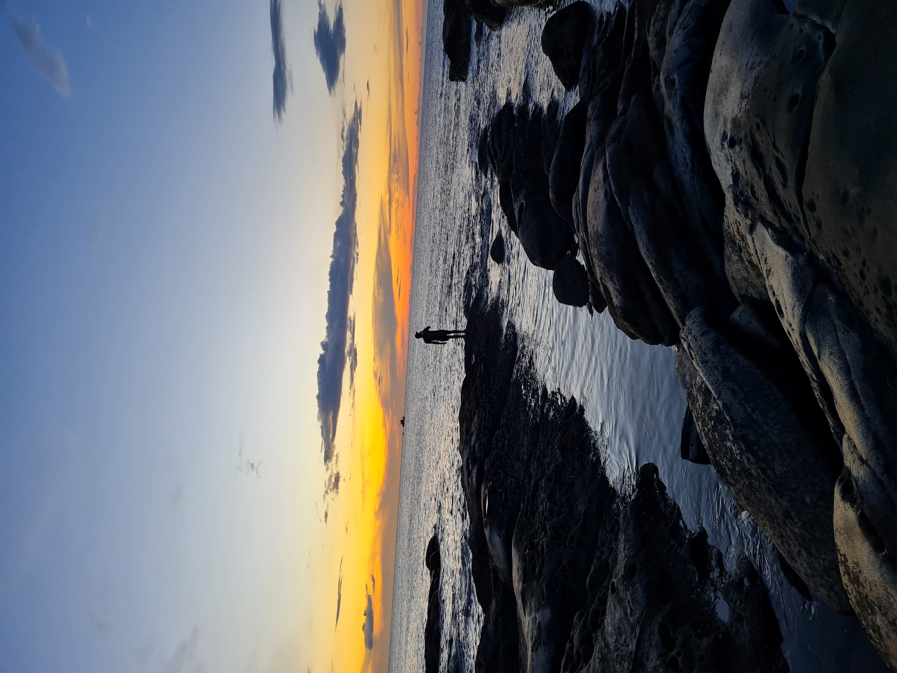

Welcome,
to my website
• Painfully handcrafted with Anime.js • (Work-in-progress)
Projects
this website (2022):html,css,javascript,anime.js:This was my first time designing and developing a website all on my own. I had some
experience with html and css through online courses and javascript from my previous projects. /new-line/ I've learned a lot through out
the process, especially about namespace, semantic html, css values and displays, keyframes, etc. If I had the time to completely
redesign my website I would, but I would also take advantage of software like Figma.:github.com/Bobby2500/My-Website; cryptoblades
extension (2022):javascript,chrome api:Cryptoblades was at one point a trending web-based rng crypto game that required the player to
pick the most optimal "fights" for a chance to earn their crypto currency. The chrome extension essentially collected data from a
Cryptoblades analytics website and used the information on another tab to pick the most optimal fights as well as to switch meta mask
wallets /new-line/ I've had some experience with Java and HTML prior to undertaking this project, but Javascript and the Chrome API was
completely new to me. In the end I managed to produce a script that would automate for that specific version of Cryptoblades, but it was
simply unmaintainable and no longer profitable due to the website constantly changing as well as the crypto market
crash.:github.com/Bobby2500/Cryptoblades-Script; autowizafinder (2022):java,aws: During my time as an intern in Elsa Digital, I was
tasked with finding the emails of potential leads using the email finder "Wiza". The issue was that each new account only came with only
20 credits and Wiza tracked new users through IP and cookies while I had thousands of linkedIn profiles to go through. /new-line/ I
decided to build a portable Java program using Apache Maven to automate the process by directly interacting with the UI using the Java
robot library and textract from AWS. It would send a screenshot to AWS textract which would process it and return the position of all
words, then it essentially worked as a script going through the list of linkedIn profile URLs. /new-line/ Being the first project I
started outside of school or code camps, the method and approach to the problem was not optimal. But this introduced me to the use of
libraries which would prove very useful in future projects.:github.com/Bobby2500/AutoWizaFinder;

About me
Timeline
09/02/2003:0;~2020:20;~2021:10;01/03/2022:8;~2022:10;09/01/2023:10;